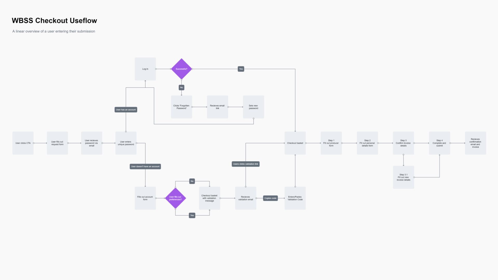
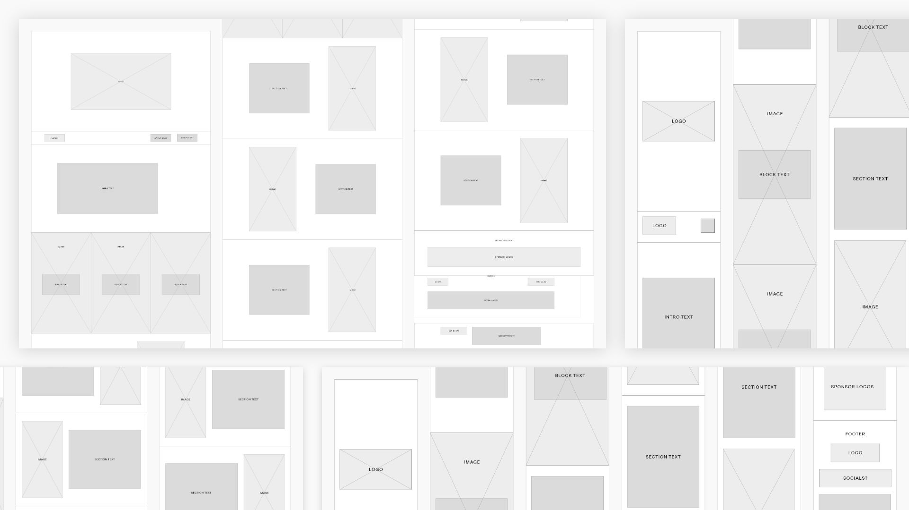
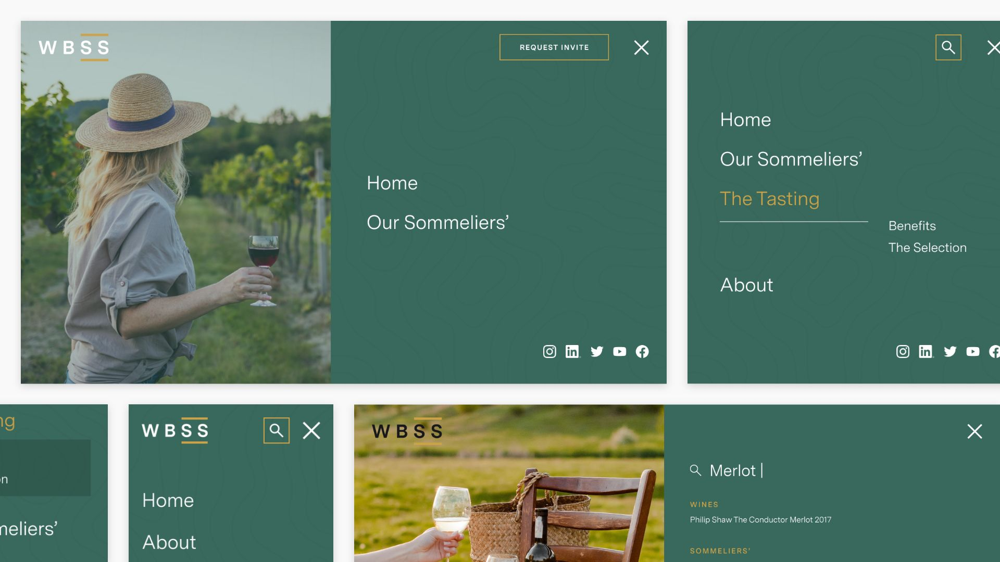
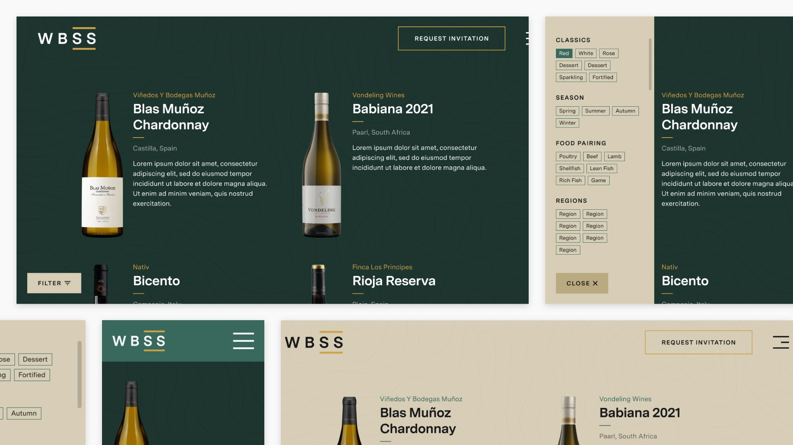
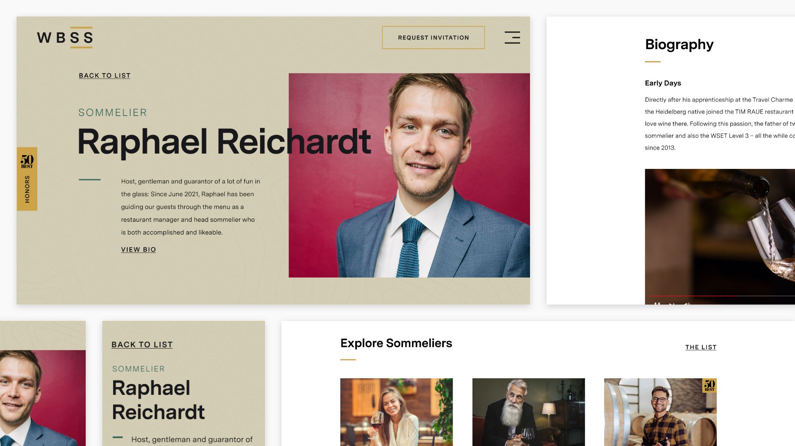

The Brief
Upon the announcement of the brand-new event, The World's Best Sommeliers Selection, I was entrusted with the task of desiging and building a website that narrated the brand’s story: an exclusive opportunity for wine enthusiasts and connoisseurs to exhibit their talents and products at the highest order, scrutinised by some of the world’s finest sommeliers.
The website was deployed in three stages – introduction and promotion, Sommelier announcements and profiles, and the wine list announcement leading up to the main event.
The Goal
The objective was to promote this prestigious event and motivate wine enthusiasts to participate in the competition. The user experience needed to highlight the competition's calibre while simplifying the entry process for users. The challenge? Entry to the event was highly esteemed, with the team desiring to scrutinise every entry and select participants – only the best of the best could partake.
Userflow and Wireframing
 Prototyping
  The Result
The outcome was a visually stunning and interactive website that seamlessly navigates users through the prestigious event. It allows users to delve into the heart of each wine’s story, discovering world-leading wine products and renowned restaurants.